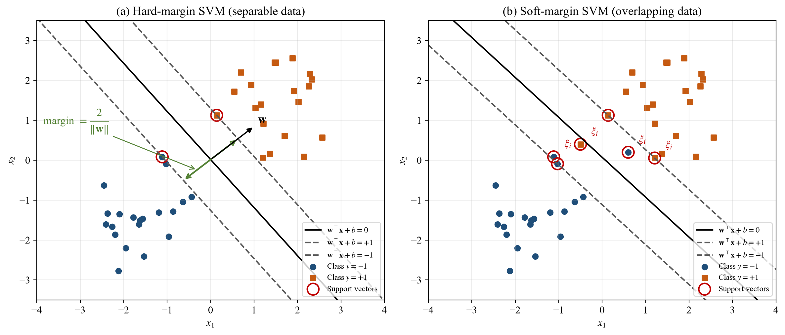
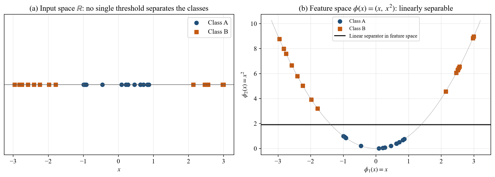
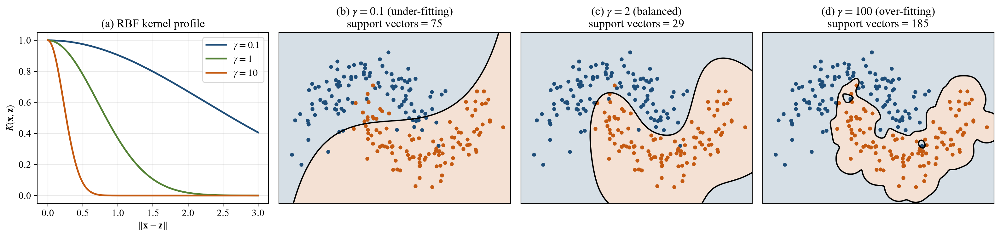
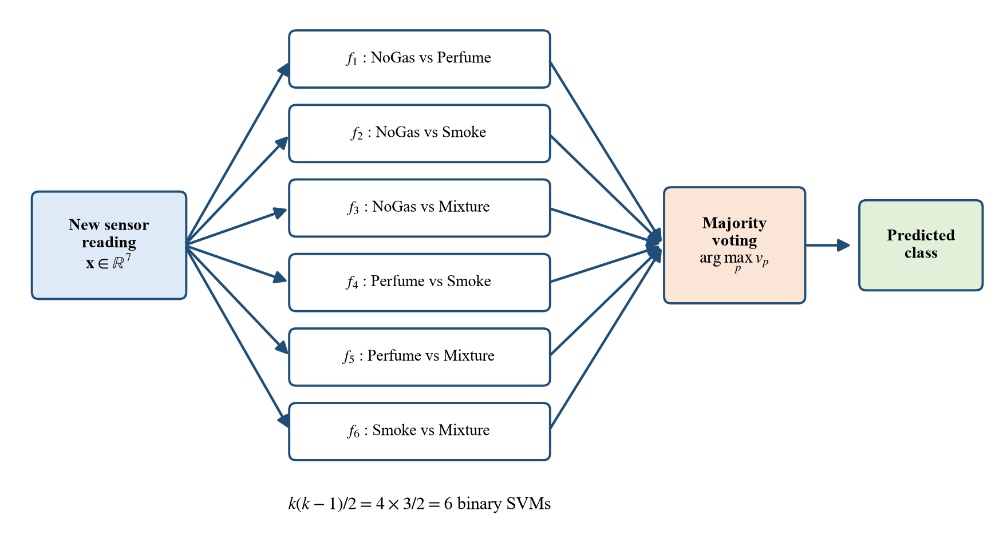

05 · The mathematics
The SVM idea: margins
Before the algebra, the picture. This page explains what an SVM is trying to do and why. Page 06 then proves it line by line.
In plain words
Imagine red and blue marbles on a table and you must lay a ruler between them. Many positions work. Which is best? The SVM's answer: the one that stays as far as possible from the nearest marble on each side. A wide gap means a new marble that lands a little off is still classified correctly. That gap is the margin.
Only the marbles touching the edge of the gap matter. Move any other marble a bit and the ruler does not move. Those few edge marbles are the support vectors, which gives the method its name.
Real data overlap, so some marbles must be allowed on the wrong side, at a price (soft margin, price \(C\)). And when no straight ruler works, the kernel trick bends the boundary by measuring similarity instead of position.
1 · A hyperplane
A reading is a vector \(\mathbf{x}\in\mathbb{R}^7\). Take two classes with labels \(y_i\in\{-1,+1\}\). A hyperplane is a flat boundary:
\(\mathbf{w}\) is perpendicular to the boundary (its direction) and \(b\) shifts it. A new reading is classified by the sign of \(\mathbf{w}^\top\mathbf{x}+b\). The distance of any point from \(H\) is
Why: write \(\mathbf{x}=\mathbf{x}_H+r\,\mathbf{w}/\|\mathbf{w}\|\) with \(\mathbf{x}_H\) on the plane. Then \(\mathbf{w}^\top\mathbf{x}+b=r\|\mathbf{w}\|\), so \(r=(\mathbf{w}^\top\mathbf{x}+b)/\|\mathbf{w}\|\).
2 · The margin is 2/‖w‖
Scaling \(\mathbf{w}\) and \(b\) by the same number does not move the plane, so we fix the scale: the closest points satisfy \(|\mathbf{w}^\top\mathbf{x}+b|=1\). Then every point is correctly classified with room to spare when
The closest points lie on the two planes \(\mathbf{w}^\top\mathbf{x}+b=\pm1\), each \(1/\|\mathbf{w}\|\) from \(H\). So the empty band between them is
Making the margin wide means making \(\|\mathbf{w}\|\) small. That gives the hard-margin SVM, a convex quadratic programme:

3 · Soft margin: allowing mistakes at a price
NoGas and Perfume overlap, so no perfect boundary exists. Give each point a slack \(\xi_i\ge0\) and charge \(C\) per unit of slack:
| Slack | Meaning |
|---|---|
| \(\xi_i=0\) | outside the margin, correctly classified |
| \(0<\xi_i\le1\) | inside the margin, but still on the right side |
| \(\xi_i>1\) | on the wrong side: a training mistake |
So \(\sum\xi_i\) is an upper bound on the number of training mistakes. \(C\) is the trade-off dial: large \(C\) punishes mistakes hard (narrow margin, risk of overfitting); small \(C\) tolerates them (wide margin, risk of underfitting). At the optimum \(\xi_i=\max\{0,1-y_if(\mathbf{x}_i)\}\), so the problem is the same as minimising the hinge loss plus a penalty on \(\|\mathbf{w}\|\):
4 · The kernel trick: curved boundaries
If the classes cannot be split by a flat boundary, map them to a bigger space with a function \(\phi\) where they can. Figure 10 shows the idea in one dimension.

The magic is that the SVM never needs \(\phi\) itself, only inner products \(\phi(\mathbf{x})^\top\phi(\mathbf{z})\). A kernel computes that inner product directly. The one used here is the RBF (Gaussian) kernel:
It equals 1 when two readings are identical and fades toward 0 as they move apart. \(\gamma\) controls how fast it fades.

5 · Four classes from two-class SVMs
An SVM separates two classes. For four classes, scikit-learn (LIBSVM) trains one SVM per pair — one-vs-one — and lets them vote:

Why SVM suits this project
Solid convex theory with one global optimum; works well with thousands (not millions) of samples; prediction depends only on support vectors, so it is fast; and every step can be written down and explained.
What it does not do
It does not use time order (each reading is judged alone), and it does not give calibrated probabilities without extra fitting (Platt scaling).
Say this if asked "what is an SVM?"
"An SVM separates two classes with the boundary that leaves the widest possible gap to the nearest points. Those nearest points are the support vectors and they alone fix the boundary. A soft margin lets some points cross at a cost C, and a kernel such as the RBF makes the boundary curved without ever computing the high-dimensional features."